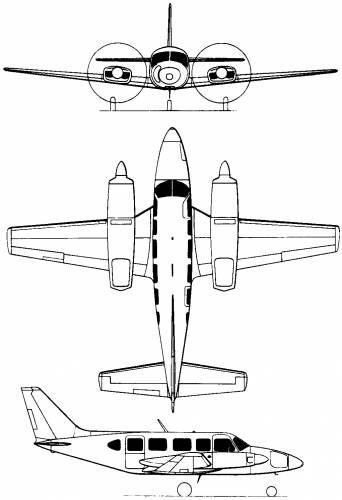
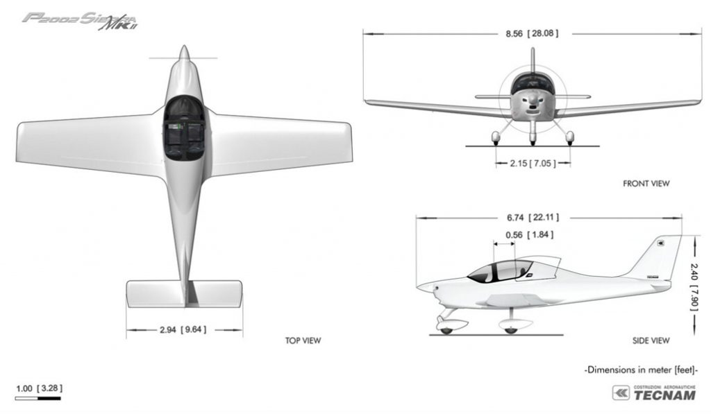

El Robinson R44 es un helicóptero civil construido por Robinson Helicopters. Basado en el helicóptero biplaza Robinson R22, el R44 dispone de mandos hidráulicos y capacidad para 4 personas.
Alcance: 560 km
Tipo de motor: Lycoming O-540
Primer vuelo: 31 de marzo de 1990
Tipo: Helicóptero utilitario y de entrenamiento
Piper PA-31 Navajo

El Piper PA-31 Navajo es un avión bimotor para aviación civil construido por la compañía estadounidense Piper Aircraft usando motores Lycoming. Este aparato también fue construido bajo licencia por la compañía brasileña Embraer con denominación EMB820.
Alcance: 1875 km
Tipo de motor: 2× motor de pistones opuestos horizontalemnte 6 cilindros refrigerado por aire Lycoming TIO-540-A.
Potencia: 231 kW (310 HP) cada uno.
Velocidad crucero (Vc): 383 km/h (238 MPH; 207 kt) a 6100 m
Techo de vuelo: 7315 m (24 000 ft)
Tecnam P-2002

El P2002 es un avión biplaza lado a lado, ala baja, con tren de aterrizaje fijo. El P2002 se caracteriza por sus superlativas prestaciones y cualidades de vuelo, y validados en 15 países no europeos. La facilidad de pilotaje y mantenimiento hacen de este avión una excelente solución para la formación de pilotos en escuelas de vuelo, pero también lo hacen ideal como plataforma de vigilancia y patrulla, y por supuesto para vuelos de turismo.